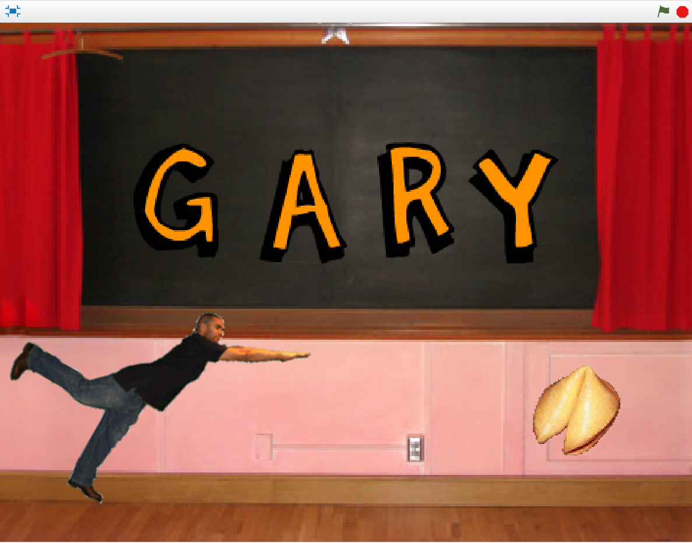
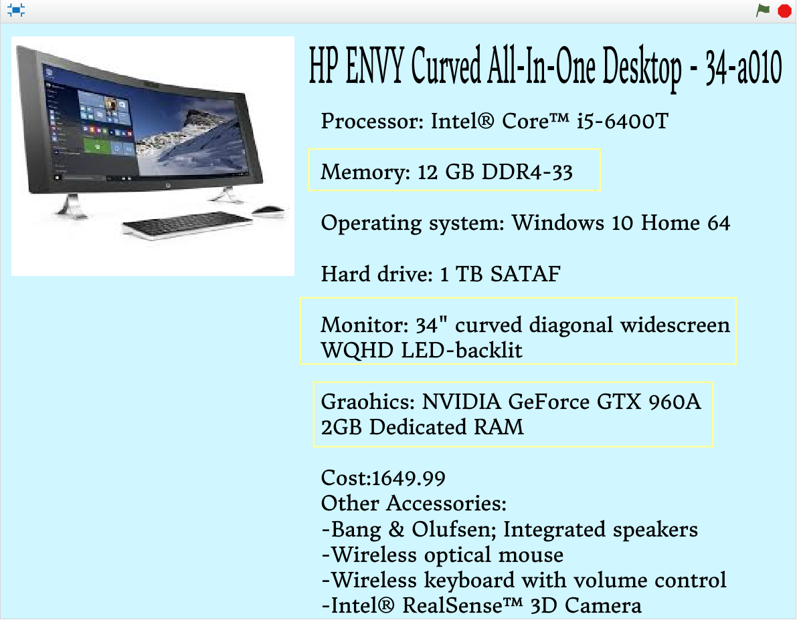
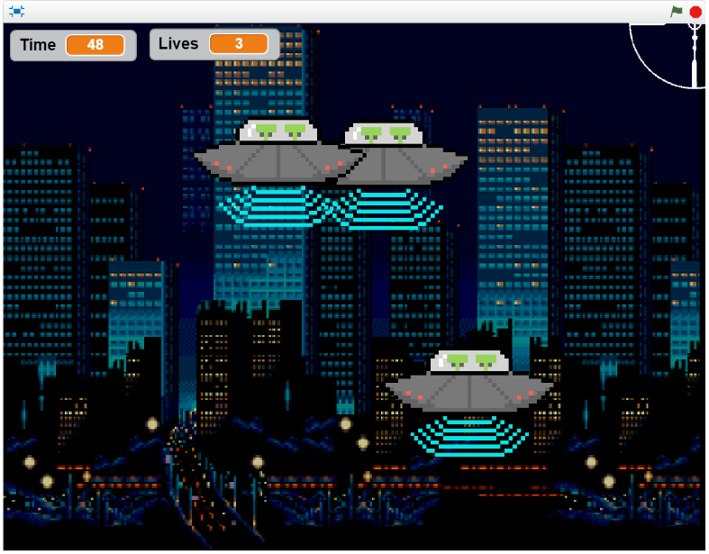

Name Assignment

Description:
Use scratch to create a program that show my name. You should have 3 unique behaviors for you letters. The program should run when the green flag is clicked, and for extra credit, reset when the green flag is clicked again.
Concepts Learned:
- Using event blocks - green flag clicked, when key pressed.
- Conditional statements - I learned to use if stements.
- Used loops - I learned to use firever and repeat until block.
- Sprites - I created my own sprites using the sprite editor, I used the library of sprites to find letters in my name and adjusted the costumes.
- Movement - I used the x and y values to make my sprites move to their original location when the green flag was clicked.
Computer Buying Project

Description:
Create a slideshow or animation in scratch to present your interview questions. You need all four of your computers and their specs, and the computer that win and why. Your group will present it in class.
Concepts Learned:
- Using looks blocks.
- Conditional statements - I learned to use if stements.
- Using motion blocks.
- Changing backgrounds.
FInal Project

Description:
Create a game or a story. For the game, you need to have a timer, and something to keep track of your score. YOu also need a help screen, and a way to let the player know if they win.
Concepts Learned:
- Changing costumes.
- Using broadcast.
- Using pick random block.
- Using variables.
- Using sensing blocks.